第 14 讲：工具链（Tool Chains）——从世界编辑器到协同编辑
理解游戏引擎工具链的架构与关键机制：世界编辑器如何组织数据、插件如何组合、反射如何驱动叙事工具，以及大团队如何协同编辑同一个世界。
◆ 学完这一讲，你应该能
能说清世界编辑器为什么是“特殊模式下的游戏引擎”，以及编辑器专用代码与运行时如何隔离。
能解释鼠标拾取（RTT 与射线检测）的原理、优缺点与适用场景。
能描述地形/环境编辑中规则系统与样条（Spline）的作用。
能说明编辑器插件架构的三种组合方式（覆盖、分布式、管线/洋葱圈）及其典型用途。
能理解反射（Reflection）如何成为 Sequencer 与可视化脚本的基石，以及 C++ 反射的基本实现路径。
能列举大项目协同编辑的冲突来源与缓解手段：分层、分块、OFPA、实例/资产锁、OT/CRDT。
核心结论速记
世界编辑器是“编辑器模式”下的完整游戏引擎，视口就是引擎渲染结果；编辑器专用代码必须与运行时隔离。
编辑器里一切皆可编辑对象，属性编辑由 Schema 驱动，内容浏览器管理资产缩略图与共享。
鼠标拾取两条路：RTT（把对象 ID 渲染到离屏纹理再读回）简单但多画一帧；射线检测（Ray Casting）快但需要空间查询结构。
地形用高度图+纹理图+植被实例/分布图描述；环境编辑靠规则系统解耦各子系统，样条用于道路/河流等线性要素。
插件架构让系统与对象类型自由组合，组合方式有覆盖、分布式、管线与洋葱圈四种。
反射把代码元信息变成可查询的映射表，是 Sequencer 绑定属性轨道和可视化脚本的基础；C++ 反射靠 Clang AST + 宏标记 + 代码生成实现。
协同编辑的核心是减少冲突：分层、分块、OFPA 把资产拆小；实例锁/资产锁避免同时修改；OT/CRDT 解决分布式操作合并与撤销重做。
011. 游戏生产现场与工具链的定位
游戏生产不是一个人写代码，而是一群思维模式完全不同的人围着同一堆数据干活：美术从 DCC（Maya、Blender、ZBrush）导出模型和贴图，策划在表格和编辑器里摆关卡、调数值，程序写系统逻辑。工具链（Tool Chains）就是把这些人和数据粘起来的整套软件基础设施。
这一讲要解决的核心矛盾有三个：
- 数据量巨大且格式繁多：DCC 格式（FBX、glTF）不适合直接进引擎，需要导入、转换、压缩、组织成运行时友好的资产。
- 不同角色心智模型不同：美术关心“看起来对不对”，策划关心“玩起来对不对”，程序关心“跑起来对不对”。工具要让他们都能用同一种方式操作同一份数据。
- 所见即所得（WYSIWYG）是高质量生产的硬要求：改一个参数，视口里立刻看到结果，否则迭代成本高到无法接受。
所以工具链不是“编辑器 UI 的集合”，而是数据 + 编辑操作 + 可视化反馈 + 协作机制的完整闭环。世界编辑器（World Editor）是这个闭环的 hub：它把场景、资产、光照、地形、动画、音效全部收拢到一个界面里。
直觉：把世界编辑器想成一个“游戏引擎的驾驶舱”——引擎提供动力（渲染、物理、动画），编辑器提供仪表盘和操纵杆（视口、大纲、细节面板、内容浏览器）。
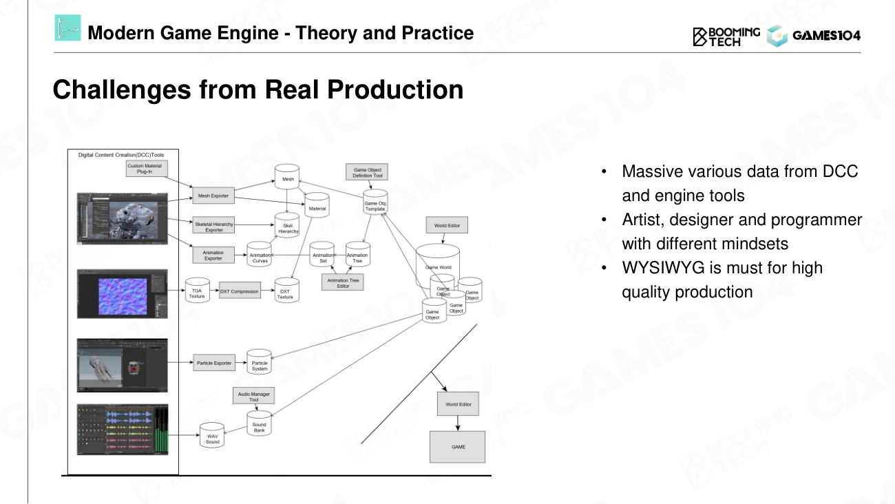
常见坑
把工具链等同于“写编辑器 UI” → 忽略数据转换、版本管理、协同编辑，项目后期会付出巨大代价 → 从第一天就把资产导入管线和版本控制纳入工具链设计。
UE / Unity 落地
UE 的 World Editor 与 Unity 的 Editor 都是这个 hub；UE 的 Content Browser 对应 Unity 的 Project 窗口，Details 面板对应 Inspector。
DCC 导入：UE 的 FBX/glTF 导入器、Unity 的 Model Importer，都是“格式转换 + 运行时优化”的入口。
022. 世界编辑器：一个特殊模式下的游戏引擎
世界编辑器的视口（Viewport）不是“画出来的预览图”，而是由完整游戏引擎在编辑器模式下实时渲染的结果。这意味着你在编辑器里看到的光照、材质、后处理，和运行时是同一套代码路径——这正是 WYSIWYG 的技术保证。
但编辑器模式需要很多运行时不需要的东西：Gizmo（移动/旋转/缩放手柄）、网格线、选中高亮、碰撞体可视化、相机漫游等。课件特别警告：编辑器专用代码必须被隔离，不能混进运行时构建。常见做法是用宏或编译条件把编辑器代码包起来，打包时剔除。
编辑器的典型布局（课件 P9 的示意图）包括：
- Viewport Toolbar：视口工具栏，切换显示模式、变换工具。
- Outliner：场景对象大纲，树形组织。
- Levels：关卡/层管理。
- Details：选中对象的属性面板。
- Layers：分层。
- Content Browser：资产浏览器。
- Sequence Recorder：序列录制。
编辑器里一切皆可编辑对象：灯光、模型、相机、甚至系统配置，编辑需求高度一致（移动、改参数、绑定事件）。因此编辑器通常抽象出统一的“对象”概念，用不同视图呈现同一批对象：分类视图、分组视图、树形视图。属性编辑则由 Schema 驱动：每个类型声明自己有哪些可编辑属性，面板自动生成；在此之上还可以为特定类型写自定义编辑工具（比如颜色选择器、曲线编辑器）。
内容浏览器（Content Browser）则把资产管理从“静态文件夹”推进到“内容海洋”：缩略图直观预览、资产可跨项目共享、支持搜索与过滤。
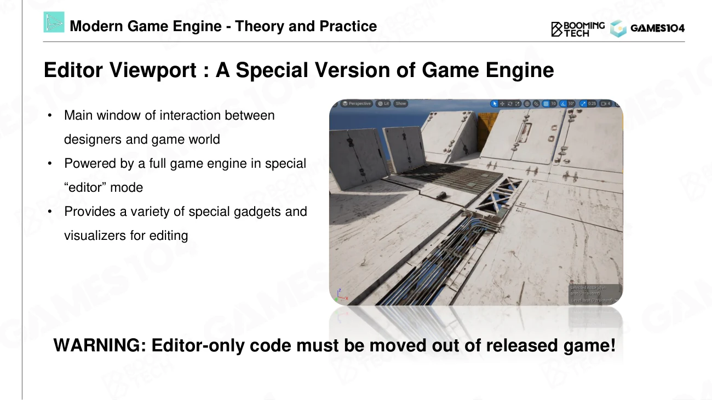
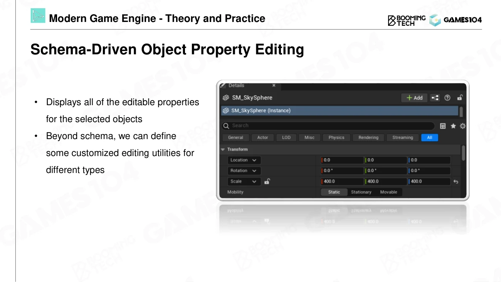
常见坑
编辑器代码混入运行时 → 打包体积变大、甚至因编辑器 API 缺失导致崩溃 → 用
#if WITH_EDITOR之类的宏严格隔离，并在 CI 里跑一次 Shipping 构建验证。属性面板手写每个类的 UI → 新增字段就要改面板代码，维护爆炸 → 改为 Schema/反射驱动，面板自动读取字段列表。
UE / Unity 落地
UE：
#if WITH_EDITOR/WITH_EDITORONLY_DATA隔离编辑器代码；Details 面板由UPROPERTY(EditAnywhere)等反射标记驱动。Unity：
#if UNITY_EDITOR隔离；Inspector 由[SerializeField]与自定义Editor脚本驱动。
033. 编辑操作的基础设施：鼠标拾取、变换与地形环境
编辑器里最高频的操作是“选中一个东西”。鼠标拾取（Mouse Picking）有两条经典路线：
RTT（Render to Texture）：把每个对象用唯一颜色（ID）渲染到一张离屏纹理，鼠标位置读回该像素颜色，反查对象。
- 优点：实现简单，天然支持“框选/范围查询”，能处理遮挡（只取最前面的像素）。
- 缺点：要多画一张图，查询性能差（每次拾取都要读回 GPU 数据），被遮挡对象无法直接选中。
射线检测（Ray Casting）：从相机经过鼠标发一条射线，与场景做求交。
- 优点：无需额外绘制，查询快，能拿到精确交点。
- 缺点：需要空间加速结构（BVH、八叉树），实现复杂；对大量对象或复杂网格要注意性能。
变换编辑（Object Transform Editing）提供移动/旋转/缩放手柄，通常配合吸附（Snap）与局部/世界坐标系切换。
地形（Terrain）由三部分描述：高度图（Height map）决定地貌，纹理图（Texture map）决定外观，植被用树实例 + 装饰物分布图（Decorator distribution map）描述。高度笔刷（Height Brush）通过绘制高度图来调整地形网格，要求变化自然平滑，并支持自定义笔刷形状。实例笔刷（Instance Brush）放置植被实例：优点是实例位置固定、可后续修改；缺点是数据量大。
环境编辑包括天空、光照、道路、河流等。难点在于规则系统（Rule System）：现实中“路上不能长树”“路边通常有石头”“道路要贴合地形”。课件用一张依赖图说明：道路系统会影响其他环境数据，规则系统负责处理数据变化，从而解耦各环境子系统。样条（Spline）则用来表达道路、河流这类线性要素，通过控制点插值生成曲线。
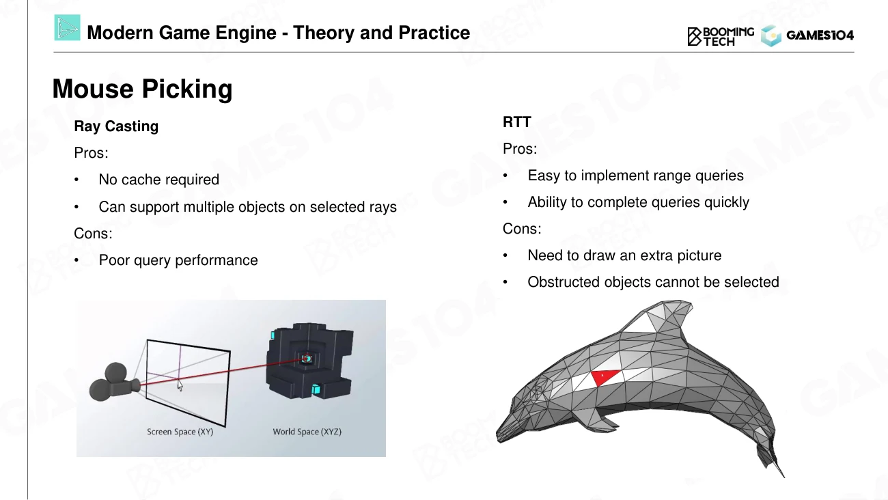
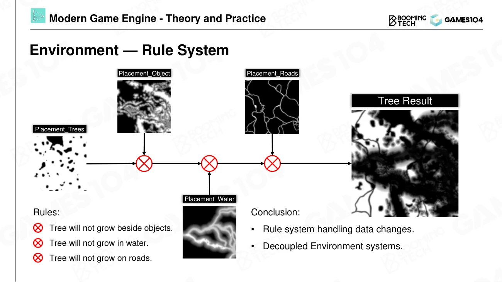
常见坑
RTT 拾取时对象 ID 颜色精度不够 → 相邻 ID 映射到同一颜色，选错对象 → 用足够位深（如 24 位）或分块编码 ID。
射线检测没有空间加速结构 → 对象一多就卡 → 引入 BVH/八叉树，或对静态物体预计算。
高度笔刷直接改顶点导致接缝 → 笔刷边缘没有平滑衰减 → 使用 falloff 曲线并保证笔刷作用域连续。
UE / Unity 落地
UE：视口点击选择底层就是射线检测 + 物理查询；地形用 Landscape 的高度图与图层（Layer）笔刷；植被用 Foliage 工具。
Unity：Terrain 组件用高度图与 Splat Map；植被用 Terrain 的 Paint Trees/Details；道路常用 Spline 包（如 Unity Splines）。
044. 插件架构：系统与对象类型的自由组合
商业软件几乎都支持插件：Chrome 扩展、Qt Creator 插件、UE 的 Editor Plugin。课件的关键洞察是：任何系统（System）与任何对象类型（Object Type）的交叉点都可以做成插件——比如“地形系统 × 笔刷工具”“动画系统 × 序列编辑器”。
多个插件同时作用于同一功能时，需要定义组合规则。课件给出四种：
- 覆盖（Covered）：只执行新注册的逻辑，跳过原有逻辑。典型例子是地形编辑覆盖默认行为。
- 分布式（Distributed）：每个插件都执行，若有输出则合并结果。大多数特殊系统效果属于此类（比如多个后处理插件叠加）。
- 管线（Pipeline）：输入输出首尾相连，通常输入输出是同一数据类型。典型例子是资产预处理、为物理生成几何体。
- 洋葱圈（Onion Rings）：在管线基础上，核心逻辑在中间，插件像洋葱皮一样包裹核心，可在前后插入逻辑。
插件还带来版本控制问题：插件与宿主应用必须有确定的版本关系，否则无法协同工作。常见策略是插件使用与宿主相同的版本号，或使用插件自己的版本号并声明兼容的宿主版本范围。
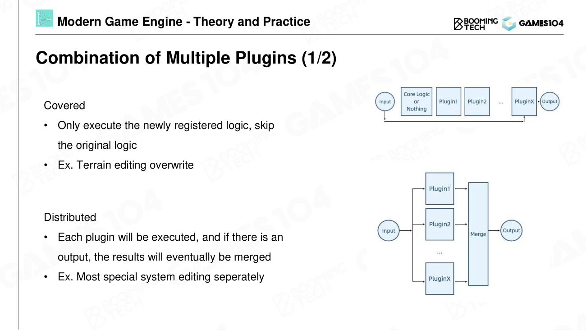
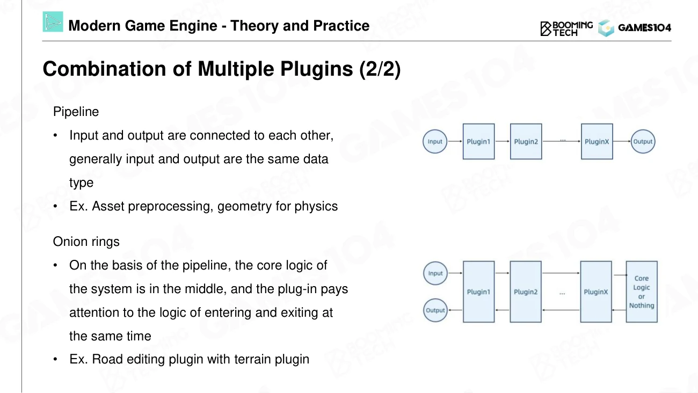
常见坑
插件随意改宿主内部状态 → 升级宿主后插件全崩 → 插件只通过稳定接口通信，版本号严格匹配。
多个插件都做“覆盖” → 后注册的覆盖先注册的，行为不可预测 → 明确优先级规则并在文档里写清。
UE / Unity 落地
UE：Editor Plugin 通过
.uplugin声明模块与依赖，Plugins目录可启用/禁用；模块加载有明确的 LoadingPhase。Unity：Package Manager 与 Asset 中的 Editor 脚本扩展；
[InitializeOnLoad]可在编辑器启动时注册逻辑。
055. 叙事工具与反射：Sequencer 为什么能绑定任何属性
游戏里的叙事（Storytelling）在引擎中表现为时间轴上的参数变化：在某个时间点播放声音、播放特效、播放动画、调整灯光……把这些能力做成可视化工具，就是 Sequencer（UE）/ Timeline（Unity）。
Sequencer 的几个核心概念：
- Track（轨道）：引用场景中的 Actor（角色、道具、相机、特效等）。
- Property Track（属性轨道）：绑定被引用 Actor 的某个属性。
- Timeline（时间线）：以离散帧描述时间。
- Key Frame（关键帧）：在指定时间点设定属性值，帧间插值。
工作流是：把“小鸡”绑定到 Track → 把它的位置属性绑定到 Property Track → 在 A、B、C、D 设置关键帧 → 引擎沿关键帧插值，让小鸡从 A 走到 B 再到 C、D。
关键问题：Sequencer 怎么知道“小鸡”有哪些属性可以绑？答案是反射（Reflection）。反射是程序在运行时检查、内省、修改自身结构的能力。引擎用反射生成一张“代码元信息地图”：类名、函数名、参数名 → 访问器（accessor）与调用器（invoker）。有了这张表，Sequencer 就能把任意对象的任意属性绑到轨道上，可视化脚本也能枚举出所有可调用函数。课件强调这是“一劳永逸（Once and for all）”的桥。
C++ 本身没有原生反射，实现路径是：
- 从代码收集类型信息：编译器前端（Clang）把源码解析成抽象语法树（AST）。AST 是源代码语法结构的树形抽象表示，每个节点代表一种语法构造。
- 从 AST 生成 Schema：解析出类型名、字段名、字段类型，在内存里建临时 schema。
- 生成访问器代码：为类生成类型信息 getter，为字段生成 setter/getter，为函数生成 invoker。
- 管理映射表：用
<string, accessor>的 map 管理所有访问器。
Piccolo 引擎选择 Clang 的原因：Clang 的主要目标之一就是提供库式架构，让编译器能与其他处理源码的工具互操作。为了精确控制反射范围，用宏 + __attribute__ 给类型打标记，并定义 CLASS 宏区分预编译与编译阶段。最后用代码渲染（Code Rendering）——把收集到的数据套进模板（如 Mustache，因大量使用 {{ }} 像八字胡而得名）生成代码。代码渲染的优点是代码与数据强分离。
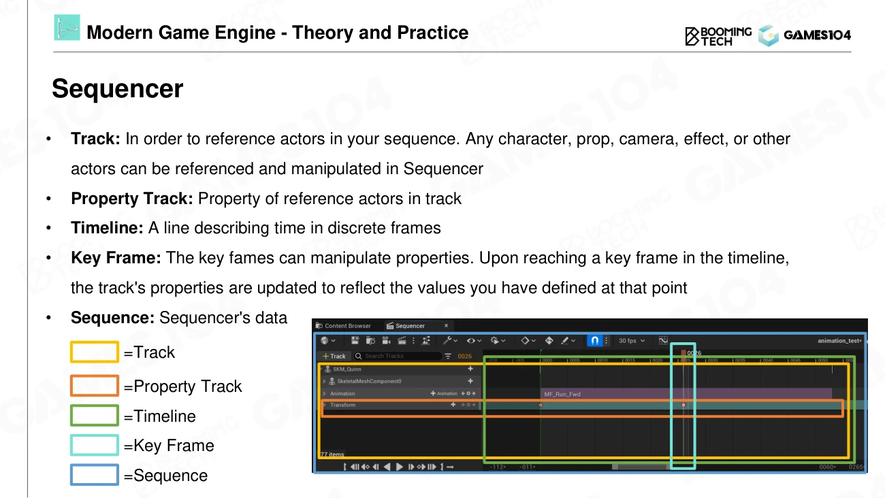
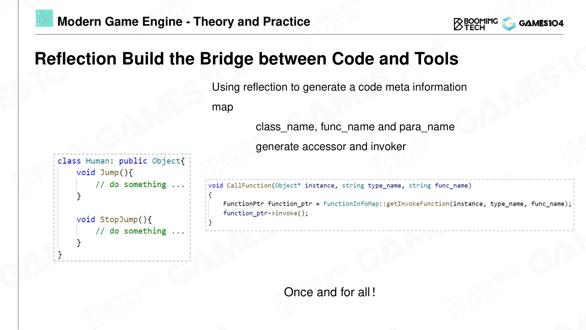
补充说明
课件 P44–P45 还提到“硬编码方式实现更多功能”的局限，说明为什么需要反射来避免为每个类型手写绑定代码。
常见坑
以为 C++ 有原生反射 → 直接写
obj.getProperty("x")编译不过 → 必须靠宏标记 + 外部工具生成代码，或使用引擎提供的反射宏。反射标记漏写 → 属性在 Details 面板/Sequencer 里看不到 → 检查
UPROPERTY/自定义宏是否加在字段上，并重新生成代码。AST 解析所有头文件 → 编译期工具极慢 → 用宏标记缩小解析范围，只解析被标记的类型。
UE / Unity 落地
UE：
UPROPERTY/UFUNCTION宏 + Unreal Header Tool（UHT）生成反射代码；Sequencer 的属性轨道正是靠这套反射枚举属性。Unity：C# 原生反射（
System.Reflection）+[SerializeField]；Timeline 通过反射绑定 Playable 属性。
反射访问器的极简伪代码：用 map 把字符串映射到字段读写函数（cpp）
struct FieldAccessor {
std::function<void(void*, const void*)> set;
std::function<void(void*, void*)> get;
};
std::unordered_map<std::string, FieldAccessor> g_fields;
// 由代码生成器为每个被标记的字段生成类似下面的注册代码
// g_fields["position"] = { setPosition, getPosition };066. 协同编辑：把冲突关进笼子
大项目里，很多人同时改很多资产，版本管理极其困难。合并冲突（Merging Conflicts）是最大的问题：每次更新或上传资产都要花大量时间解冲突。
减少冲突的第一类手段是把资产拆小：
- 分层（Layering the World）：世界拆成多个层，每层存一个资产文件，不同人改不同层。优点：合理分层能显著减少冲突，且层逻辑可复用；缺点：层之间可能有依赖，世界很复杂时难以合理拆分。
- 分块（Divide the World）：世界按固定大小切成块，每块一个资产文件，不同人改不同块。优点：按位置拆分便于动态扩展世界，空间分隔对操作者直观；缺点：跨块对象难处理。
- 每个 Actor 一个文件（One File Per Actor, OFPA）：UE5 提出的拆分方式，把 Actor 实例数据存到外部文件，改 Actor 时不需要保存主 Level 文件。优点：场景划分细粒度，冲突更少，只需保存被修改的对象；缺点：文件数量巨大，版本控制负担重，Cook 时把大量 OFPA 文件嵌回 Level 会变慢。
第二类手段是在同一场景里协同编辑：多个编辑器实例连到协同编辑服务器（Coordinate Editing Server），实时共建一个虚拟世界。操作同步靠命令系统：把自己的命令序列化发给服务器，服务器广播，各客户端反序列化执行。
但这带来巨大挑战：分布式操作的一致性。具体问题包括：
- 合并（Merge）：两人同时改同一对象怎么办？
- 撤销/重做（Undo/Redo）：三人协作时，用户 2 按撤销，期望撤销的是自己的操作而不是别人的。
基础解法是锁：实例锁（Instance Lock）避免多人同时改同一实例，资产锁（Asset Lock）避免多人同时改同一资产。但锁不是万能的——它解决不了撤销重做的语义问题。
彻底解法是两类理论工具：
- 操作变换（Operation Transform, OT）：把操作抽象成由可枚举的 N 种原子操作类型组成的操作序列，通过变换函数解决并发冲突。
- 无冲突复制数据类型（Conflict-free Replicated Data Type, CRDT）：一种在多台计算机间复制、可并发更新且能自动合并的数据结构。
服务器是协同编辑中最重要的角色：它保留每个客户端的会话（Session），直到用户显式删除会话、发生崩溃或误操作。传统工作流与协同编辑工作流的对比（P77）直观展示了从“各自改文件再合并”到“实时共享会话”的转变。
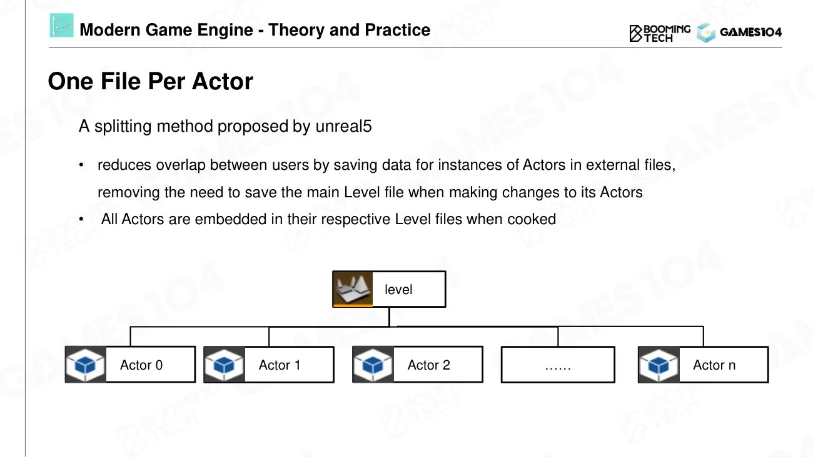
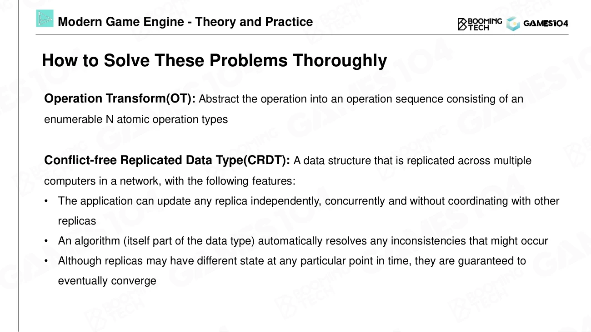
常见坑
只用锁不用 OT/CRDT → 撤销重做语义混乱，用户按撤销可能撤掉别人的操作 → 引入操作序列与变换，或至少把撤销栈限定为本地操作。
OFPA 文件太多 → 版本控制提交慢、Cook 慢 → 合理设置 OFPA 粒度，或对大量静态 Actor 合并处理。
分层/分块边界划分不合理 → 跨层/跨块对象频繁冲突 → 按团队分工和空间布局提前规划边界。
UE / Unity 落地
UE：World Partition 做空间分块，OFPA 做 Actor 级拆分；Multi-User Editing 提供协同编辑会话。
Unity：Layers 做逻辑分层；Unity Version Control / Plastic SCM 处理资产版本与合并。
引擎对照表
| 概念 / 效果 | Unreal Engine | Unity |
|---|---|---|
世界编辑器 | World Editor（视口/Outliner/Details/Content Browser） | Editor（Scene/Inspector/Project 窗口） |
编辑器代码隔离 |
|
|
属性面板驱动 |
|
|
地形与植被 | Landscape 高度图/图层笔刷、Foliage 工具 | Terrain 高度图/Splat Map、Paint Trees/Details |
序列动画 | Sequencer（Track/Property Track/Key Frame） | Timeline（Playable Director） |
协同编辑 | Multi-User Editing + World Partition + OFPA | Unity Version Control / Plastic SCM + Layers |
术语双语表
| English | 中文 | 说明 |
|---|---|---|
| Tool Chains | 工具链 | 把 DCC、编辑器、资产管线、版本控制串起来的整套生产基础设施。 |
| WYSIWYG | 所见即所得 | 编辑时看到的效果与运行时一致，是高质量生产的硬要求。 |
| Schema-Driven | 模式驱动 | 由类型声明决定属性面板显示哪些字段，面板自动生成。 |
| RTT (Render to Texture) | 渲染到纹理 | 把对象 ID 渲染到离屏纹理再读回，用于鼠标拾取。 |
| Ray Casting | 射线检测 | 从相机经鼠标发射线与场景求交，快速拾取对象。 |
| Reflection | 反射 | 程序在运行时检查、内省、修改自身结构的能力。 |
| AST (Abstract Syntax Tree) | 抽象语法树 | 源代码语法结构的树形抽象表示，反射工具从它提取类型信息。 |
| OFPA (One File Per Actor) | 每个 Actor 一个文件 | UE5 的资产拆分方式，把 Actor 实例数据存到外部文件以减少冲突。 |
| OT (Operation Transform) | 操作变换 | 把操作抽象成原子操作序列并变换合并，解决协同编辑冲突。 |
| CRDT | 无冲突复制数据类型 | 可并发更新并自动合并的数据结构。 |
课后练习
01 世界编辑器为什么被称为“特殊版本的游戏引擎”？编辑器专用代码如果不隔离会有什么后果？
查看答案
提示：
从渲染路径与构建产物两个角度想。
因为编辑器视口由完整游戏引擎在编辑器模式下实时渲染，与运行时共享渲染、材质、光照代码路径，保证 WYSIWYG。编辑器专用代码（Gizmo、网格线、选中高亮等）如果不隔离，会被打进运行时构建，导致包体变大，甚至因运行时缺少编辑器 API 而崩溃。正确做法是用 #if WITH_EDITOR 等宏隔离，并在 CI 中跑 Shipping 构建验证。
02 比较鼠标拾取的 RTT 与 Ray Casting 两种方案：各自适合什么场景？为什么 RTT 难以选中被遮挡的对象？
查看答案
提示：
RTT 读回的是最前面像素的颜色。
RTT 实现简单、天然支持范围查询，但要多画一张图、读回 GPU 数据慢，且只能拿到最前面像素对应的对象，所以被遮挡对象无法直接选中。Ray Casting 无需额外绘制、查询快、能拿到精确交点，但需要 BVH/八叉树等空间加速结构。适合：RTT 用于框选/简单场景，Ray Casting 用于精确点选与复杂场景。
03 Sequencer 如何做到把任意 Actor 的任意属性绑定到属性轨道？请从反射的角度解释，并说明 C++ 反射的基本实现步骤。
查看答案
提示：
元信息映射表 + 访问器。
Sequencer 依赖反射生成的“代码元信息地图”：类名、函数名、参数名到访问器/调用器的映射。绑定时通过字符串查表拿到属性的 getter/setter，即可读写任意对象属性。C++ 反射步骤：用 Clang 把源码解析成 AST；从 AST 提取类型名、字段名、字段类型生成 Schema；为类生成类型信息 getter、为字段生成 setter/getter、为函数生成 invoker；用 <string, accessor> map 管理所有访问器；最后用模板（如 Mustache）渲染生成代码。
04 一个大团队要协同编辑同一个开放世界，你会如何组合使用分层、分块、OFPA 与锁来减少冲突？请说明每种手段解决什么问题、有什么代价。
查看答案
提示：
从“拆小资产”和“避免同时改”两条线组织答案。
分层：按逻辑（如地形层、建筑层、植被层）拆资产，减少不同人改同一文件的概率；代价是层间依赖难拆。分块：按空间切块，便于动态扩展且直观；代价是跨块对象难处理。OFPA：把粒度细化到单个 Actor，冲突最少、只保存修改对象；代价是文件数量巨大、版本控制与 Cook 变慢。锁：实例锁/资产锁避免多人同时改同一对象；代价是降低并行度，且解决不了撤销重做语义。组合策略：用 World Partition 分块 + OFPA 细化，按团队分工规划层边界，对热点资产加锁，撤销重做用 OT/CRDT 或限定本地撤销栈。
05 为什么说“锁不是万能的”？三人协同编辑时，用户 2 按撤销，期望发生什么？OT/CRDT 如何从根本上解决这类问题？
查看答案
提示：
撤销的语义是“撤销我自己的操作”。
锁只能防止同时修改，不能定义并发操作的合并与撤销语义。三人协作时用户 2 按撤销，期望撤销的是用户 2 自己的操作，而不是别人的；但简单命令栈会按全局顺序撤销，可能撤掉别人的操作。OT 把操作抽象成原子操作序列，通过变换函数在并发时调整操作顺序与内容；CRDT 用可自动合并的数据结构保证副本最终一致。两者都能在无锁或弱锁下保证一致性，并支持符合直觉的撤销重做。